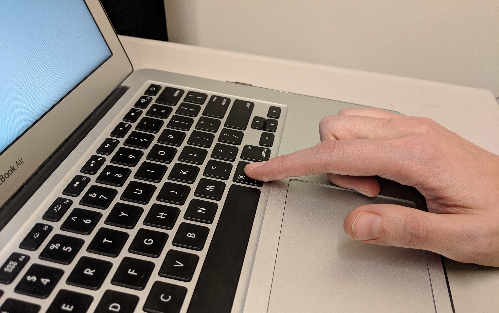
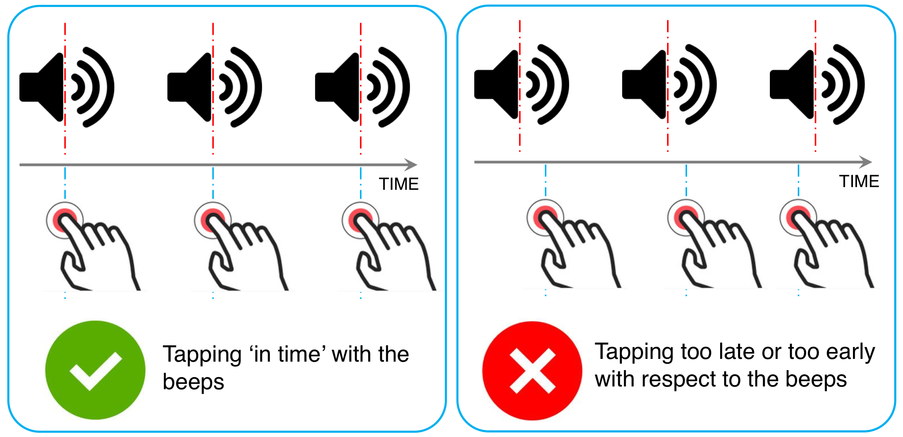

Welcome!
WARNING! JavaScript is required for this experiment to function properly, but it seems to be disabled on your computer. We recommend using the Google Chrome browser for best performance.
Setup:
1. Disable distractions
Please take a moment to disable any distractions around you (silence your cell phone, close browser tabs that will result in notifications or other distractions, and set your computer to do not disturb mode if you are able). Also, please click the full screen button in the top right corner.
Setup:
2. Configure sound
Please adjust the volume bar below so that you can comfortably hear the beeps (you should not have to strain to hear them). If you cannot hear the beeps even at higher volume levels, make sure your system/computer volume is on. If you do not hear any beeps, please do not proceed to the next step, but contact the researcher.
Current sound: 10%
When you are done configuring the sound settings, click the “NEXT” button to proceed to the next step.
Setup:
3. Choose key
Please select your preferred key. Do this by pressing a single key in a comfortable location on your keyboard (that you would be comfortable tapping with your pointer finger for an extended period of time). The key you select will appear below. You may select any key except the space bar.
Current key: z
When you are done configuring the key settings, click the “NEXT” button to proceed to the experiment instructions.
Instructions:
Please pay careful attention to the following instructions.
Instructions:
1. Place your dominant hand in a comfortable position with your pointer finger on the key you selected (z), like in the photo example below.

Instructions:
2. You will hear a sequence of beeps. We would like you to tap (completely press and then release the key and slightly lift your finger) in synch with the beeps. Try to complete each key press at the same time as each beep.
Some sequences are challenging. Just do your best to press the key at the same time as the beep.

Instructions:
3. Once the sequence of beeps stops, keep tapping the key to continue the sequence as if the beeps were still there. Keep continuing the sequence until you see the word STOP.
NOTE: Treat each sequence independently of the others.
Demo:
Please watch the video demonstration of an example sequence. Notice how the participant lifts their finger off the key between presses, but not excessively.
Practice Round:
Now you will perform a practice sequence. Remember to press the key you selected in synch with the beeps.
Status: Ready
Remember, you selected the following key to tap: z
Tap in synch with the beeps when they begin, then continue tapping until you see the STOP button.
Key presses successfully recorded.
Get ready!
Now you will do some real sequences. Some will be more difficult than others. Please do your best to press the key in synch with the beeps as accurately as possible.
After you click "Start next sequence" there will be a ~2 second pause to allow you to set up your finger on the key.
Status: Ready
Remember, you selected the following key to tap: z
Tap in synch with the beeps when they begin, then continue tapping until you see the STOP button.
Key presses successfully recorded.
Sequences complete: 0/20
Money made: $0.00
If you have to quit without completing the task, please press "QUIT NOW" at any point.
Take a break!
If you want, you can take a break here for a few minutes. Make sure to relax your hand and fingers.
Sequences complete: 0/20
Money made: $0.00
Press "BACK" once a few minutes have passed and you are ready to continue.
Are you sure you want to quit early?
You can still earn up to $2.00.
Thank you!
Experiment complete!
Please enter the following code in Mechanical Turk:
Once you have copied the code and completed the additional questions in Mechanical Turk, you are all set. Thank you for helping with our experiment!
Sequences complete: 0/20
Money earned: $0.00
Let's see how you actually performed while tapping along:
Above is a graph showing your averaged results. Results in the “0” bar show the number of key presses that were exactly aligned with the beep. It’s not possible to perfectly align all your key presses with the beeps. It's typical to show some delays, especially with difficult sequences. We are interested in how people try to move in sync and notice differences in various conditions. Thank you for helping with our experiment!
If you encounter technical issues at any time, please contact the researcher.